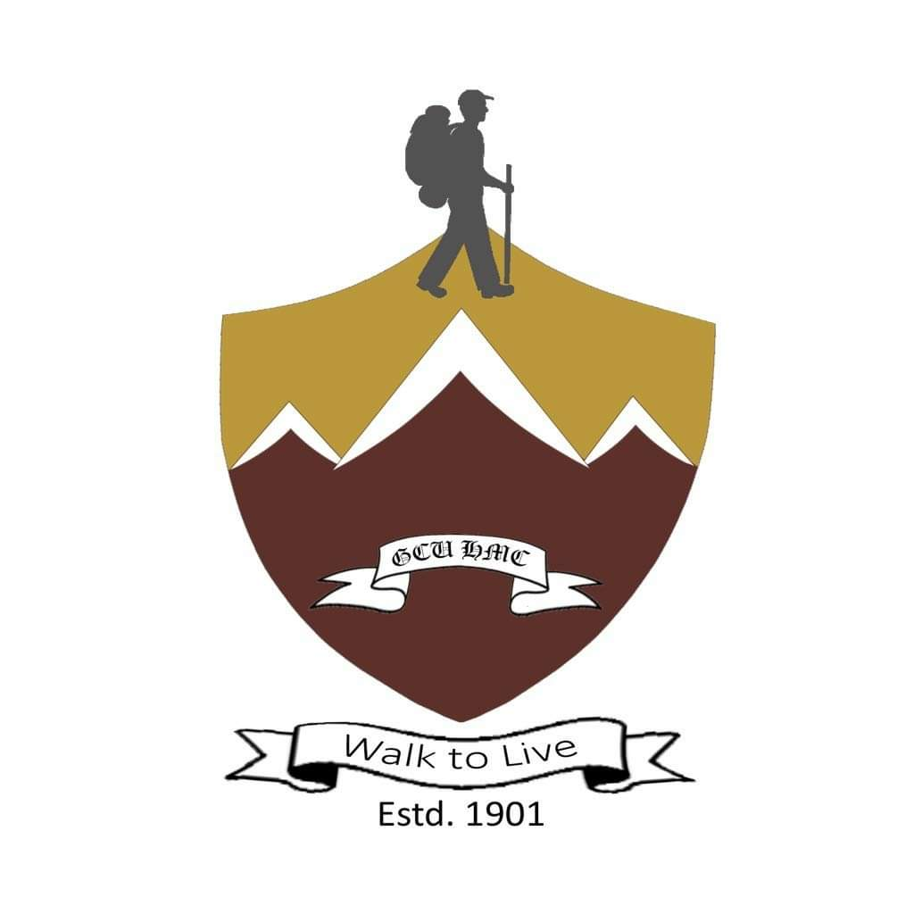
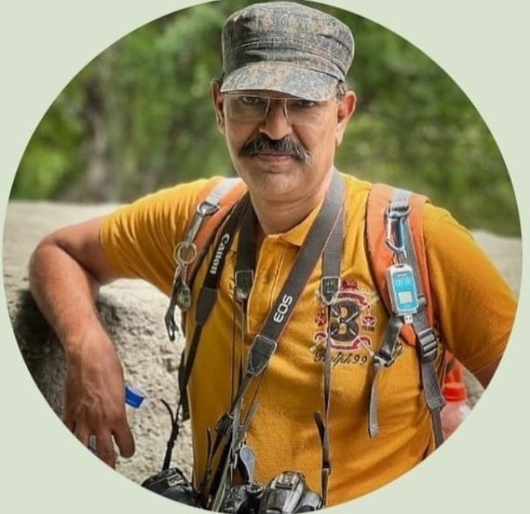

Hiking & Mountaineering ClubOfficial Website of the Hiking & Mountaineering Club (HMC)
The Hiking & Mountaineering Club (HMC) holds a prestigious position among university-level societies due to its unique nature of activities and active participation in outdoor adventures.
From the snow-covered peaks of the Himalayas to the rolling sands of Cholistan, HMC proudly hoists the university flag while training students to face nature with courage, resilience and leadership.
Organizing hiking, trekking and mountaineering journeys across diverse terrains of Pakistan.
Developing resilience, teamwork and leadership through real outdoor challenges.
A century-old tradition of exploration, discipline and camaraderie.
Established in 1901, the Hiking & Mountaineering Club initially functioned under the Sports Board and remained affiliated with the Rovers Club. Over time, HMC evolved into a separate and independent university-level society, proudly carrying its own identity.
Since the inception of mankind, humans have engraved their fate on the stones of hardship and despair. This perpetual endeavor reflects an innate curiosity to explore the unknown. HMC exists to guide and train students to meet adventures and challenges in nature with courage, resilience and leadership.
“Walk to Live”
The HMC flag features the official university colors: Maroon, Gold and Blue. The emblem placed at its center proudly carries the cherished motto “Walk to Live”.
The flag symbolizes dignity, honor and pride for all HMC members and office bearers. May it continue to soar to greater elevations and represent the adventurous spirit of the club.
HMC extends its sincere gratitude to Agha Rizwan Ali, Rizwan Anwaar, Shaheryar Shahid and Ali Raza Khan for their assistance in the flag design. The flag design was officially approved in October 2014.
Among its distinguished alumni, the Hiking & Mountaineering Club proudly counts Mustansar Hussain Tarar, a renowned writer and traveler.
His association reflects the club’s enduring legacy of exploration, endurance and love for nature, inspiring generations of HMC members to embrace the spirit of adventure.

Syed Yasir Usman
Sobaan Aziz Usmani
Upcoming trips will be announced here.
Past expeditions will be documented soon.Memories from our adventures.
Gallery will be updated shortly.